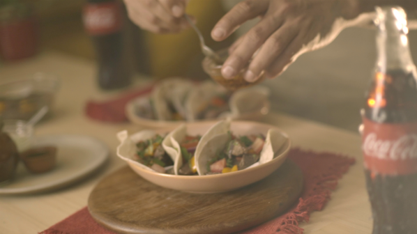

Un Mundo de Comida
Conociendo más sobre las delicias del mundo
Gelatina de Coca-Cola
3 de Septiembre 2016

Ingredientes: 6 onzas de gelatina Jell-O con sabor a cereza (no libre de azúcar), 1 taza de agua hirviendo, 10 onzas de Coca-Cola, 1 lata (14.5 a 16 onzas) de cerezas rojas sin semilla (en agua), 1 lata (8 onzas) de piña triturada y 1 taza de pecanas picadas (crudas o ligeramente tostadas)
Preparación:Coloque la gelatina en un recipiente grande. Vierta el agua hirviendo sobre ella y revuelva hasta que se disuelva. Revuelva en la Coca-Cola. Refrigere la mezcla hasta que esté parcialmente firme,aproximadamente 30 minutos. NOTA: Revise y revuelva cada 3 a 5 minutos. Es necesario que espese pero que no adquiera una consistencia firme. Coloque las cerezas y el jugo en un procesador de alimentos que tenga una hoja de cuchilla, o en una licuadora. Procese o licue un par de veces para cortar ligeramente las cerezas.
Fer42: Es una excelente idea, ahora mismo la voy a probar
Jenvan24: Me gustaría saber si puedo usar cualquier tipo de coca-cola
Tacos de Lomito
24 de Marzo 2017
Ingredientes: 2 filetes de lomito de res,2 chile dulces / ají morrón / pimiento / chiltoma, 1 cebolla, 1/2 ramita de culantro / cilantro, 1 tomate mediano, Salsa o aceite de chile picante, 1 paquete pequeño de tortillas de maíz o de trigo, 1 cucharada de aceite de oliva, sal y pimienta
Preparación:Pica en cuadritos los pimientos y el tomate. Pela la cebolla y pícala en tiritas. Toma los filetes de lomito y pártelos en tiritas ni muy gruesas ni muy largas. Calienta el sartén y prepáralo con el aceite de oliva. Coloca las tiritas de lomito y empieza a sofreírlas de 5 a 10 minutos, según el término que prefieras. Añade sal y pimienta al gusto. Antes de que el lomito pierda su color rojizo, agrega al sartén los pimientos, el tomate y el culantro para que llenen de más sabor a la carne. Una vez estén listas estas fajitas de lomito, sírvelas con tortillas de maíz o de trigo y añade un poquito de picante encima.
Emma94: A mi me encantan los tacos pero no sabia como prepararlos, gracias por la receta
TommyLB: Me gustó mucho la forma en que fue preparando y explicando cada paso